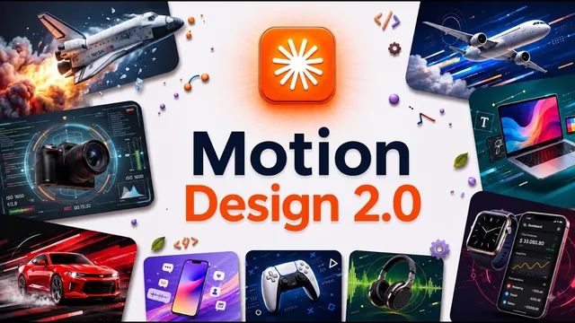

클로드가 모션 디자인을 해결했다 (AI 티 나는 결과물 탈출)

원본 영상 보기 →
- "찾기 → 만들기 → 코드화" 루프가 재현성의 핵심이에요
- AI에게 "왜 이게 좋아 보이는가"를 분해시키는 것이 프롬프트보다 강해요
- AI는 만능이 아니라 역할 분담 대상이에요
한 줄 요약
Jack이 Claude(클로드)와 영상 생성 도구 Higgsfield만으로 컬러 그레이딩, 모션 B-roll, 트랜지션까지 만들어내는 3단계 디자인 워크플로우를 보여줘요. 핵심은 하나의 루프입니다. "잘 만든 디자인을 찾아 → 그대로 만들고 → 스킬로 코드화해 언제든 재사용한다"는 거죠.
전체 내용 정리
AI 슬롭이 나오는 이유는 도구와 시스템을 안 쓰기 때문이에요
Jack은 대부분의 사람이 AI로 조잡한 결과물("AI slop")만 얻는 이유를 "AI를 그냥 챗봇처럼 다루기 때문"이라고 말합니다.
모델 자체는 이미 충분히 좋아졌어요. 문제는 올바른 도구(tools)와 올바른 시스템(systems)을 안 쓴다는 거죠. 그리고 이 둘은 둘 다 아주 단순하다고 강조합니다.
이 영상에서 보여주는 그래픽, 모션, 트랜지션은 전부 Claude로 만들었다고 해요. 관통하는 원리는 하나입니다. 훌륭한 디자인을 찾고(find), 그 디자인을 만들고(build), 그다음 코드화(codify)해서 원할 때마다 다시 쓰는 거예요.
그는 이걸 갈수록 강력해지는 3개 레벨로 나눠 설명합니다.
레벨 1: Claude가 LUT를 다뤄 컬러 그레이딩을 대신해줘요
첫 번째 레벨은 컬러 그레이딩(color grading, 영상 색 보정)입니다.
Jack은 예전에 유튜브 편집을 배울 때 LUT(Look-Up Table, 색 보정 프리셋)를 잔뜩 받아 밝기 등을 일일이 맞추느라 복잡했다고 회상해요. 지금은 Claude가 직접 리서치를 해서 시스템을 통째로 만들어줍니다.
그는 자신의 "디자인 운영체제(design OS)" 안에 LUT 시스템을 하나 만들어뒀는데요. "영상을 줄 테니 컬러 그레이딩을 하고 여러 옵션을 만들어달라"고 프롬프트를 준 결과물이에요.
어떤 영상이든 업로드하면 Claude가 화면에 존재하는 색들(ink, olive, shadow, skin, window, leaf 등)을 식별하고, 추천 보정과 그 차이를 보여줍니다.
예를 들면 이렇습니다. 초록빛 반사광(green spill) 제거, 피부톤을 차가운 톤에서 자연스럽게, 창문 디테일 복원, 검은 부분이 뭉개지지 않게 유지. 보정 강도(intensity)도 낮춰가며 차이를 확인할 수 있어요.
전문 컬러리스트 없이 이 작업 하나를 통째로 Claude에게 넘길 수 있다는 뜻이죠.
레벨 2: 모션 영상 B-roll을 Higgsfield + Claude로 만듭니다
두 번째 레벨은 모션 영상, 즉 인스타그램·유튜브용 B-roll(보조 영상)을 재현 가능한 스타일로 뽑아내는 거예요.
먼저 할 일은 "예쁜 것을 찾는 것"입니다. Jack은 마음에 드는 애니메이션을 하나 찾아 "이걸 1992년 + JR 버전으로 바꿔줘", "이제 와이드로 만들어줘"라고 요청했고, 파티클 이펙트가 들어간 결과물을 얻었어요.
제작에는 영상 생성 도구 Higgsfield를 씁니다. 연결 방법은 Higgsfield 화면의 연결 정보를 스크린샷으로 찍어(또는 정보를 복사해) Claude에 붙여넣고, "Higgsfield CLI에 연결해서 같이 이미지·영상을 생성하자"고 말하는 거예요. 그러면 플랫폼이 열리고 로그인하면 최신 영상·이미지 모델을 쓸 수 있습니다.
이 애니메이션 한 편을 만드는 데 약 2달러가 들었고, 색 보정·타이포·프레임 편집을 별도 소프트웨어 없이 Claude가 이어붙여 완성했다고 하네요.
레벨 2의 실제 방법: 무드보드 → design loop 스킬 → 스킬로 코드화
그냥 "이거 만들어줘"라고 하면 처참하게 실패한다고 Jack은 못 박아요. 그래서 쓰는 전략이 있습니다.
1단계는 영감(inspiration)을 찾는 것이에요. 그가 지금 가장 즐겨 쓰는 곳은 savee.com이고 Pinterest도 좋은 예입니다. 여러 영상·이미지를 저장해 스타일과 창작 방향(creative direction)을 담은 무드보드를 만들어요.
그다음 Claude에 이렇게 말합니다. "이런 스타일을 원한다, 첫 번째 이미지의 애니메이션과 두 번째 이미지의 색 조합이 좋다, 아래 스킬을 써서 만들어줘." 그리고 무료 "design loop 스킬"을 함께 붙여넣어요(영상 설명란 두 번째 링크, 이메일 입력 후 무료 제공).
결과물이 나오면 그가 하는 핵심 작업은 역설계(reverse engineering)입니다. 어떤 디자인을 보고 "이게 왜 좋아 보이는가"를 Claude에게 단계별로 분해시키는 거죠. 이미지 크기, 컬러 그레이딩, 초점(focal point)이 무엇인지 물으면 더 나은 출력이 나와요.
한 예시는 20장의 사진으로 이뤄졌고, 초점이 가운데로 모이고 이미지가 깜빡이는(flicker) 구조였습니다.
Jack은 이렇게 정리해요. "하나의 그레이딩이 모든 걸 붙여준다 — 하이라이트에서 초록이 빨강 위에 있고, 그림자는 깊고 깨끗하게, 그레인(grain, 필름 입자)이 모든 이음매를 덮는다."
앞으로 쓸 방법론도 정리됐습니다. 만들기 전에 측정하라, 전체에 하나의 그레이딩, 사진 한 장에 피사체 하나, 2~3프레임씩 홀드, 짧은 세트를 루프, 정확히 한 번만 끊어라.
완성되면 Claude에 "이걸 언제든 쓸 수 있는 스킬로 만들어줘"라고 하면 스킬로 변환돼요. 같은 방식으로 이미지를 주고 "이걸 배경으로 만들어줘"라고 해 움직이는 모션 배경도 만들 수 있습니다.
레벨 3: 트랜지션은 에셋을 다운로드해 design OS에 넣고 AI 편집기처럼 써요
세 번째 레벨은 트랜지션(transition, 장면 전환)입니다.
Jack은 직접 실험해본 결과 Claude 자체는 트랜지션을 아직 잘 만들지 못한다고 솔직하게 말해요. 대신 모션 디자인 에셋을 파는 웹사이트에서 마음에 드는 전환 효과들을 다운로드해 옵니다(필름 번, 라이트 릭, 밀리미터 샷 등).
이걸 design OS에 "트랜지션 탭"으로 추가해두면, 아무 클립이나 업로드했을 때 컷(cut) 지점을 스캔해서 실제로 컷을 넣어줘요. 사실상 전체를 훑어주는 AI 편집기를 갖는 셈이죠.
원하면 그냥 전환 효과 라이브러리로 두고 편집할 때마다 꺼내 써도 됩니다.
Jack은 마지막에 "이 기술로 할 수 있는 가장 강력한 활용 사례"를 다음에 이어서 함께 해보자며 영상을 맺어요.
핵심 인사이트
- "찾기 → 만들기 → 코드화" 루프가 재현성의 핵심이에요: 좋은 결과를 한 번 얻는 데서 멈추지 않고, Claude에 "이걸 스킬로 만들어줘"라고 해서 다음부터 한 줄 호출로 재사용합니다. 일회성 산출물과 자산(asset)의 차이가 여기서 갈리죠.
- AI에게 "왜 이게 좋아 보이는가"를 분해시키는 것이 프롬프트보다 강해요: 이미지 크기, 컬러 그레이딩, 초점을 하나씩 질문해 원리를 뽑아내면, 그 원리가 그대로 재현 가능한 규칙이 됩니다. "더 좋게 만들어줘"보다 "이 요소를 분석해줘"가 더 나은 출력을 만들어요.
- AI는 만능이 아니라 역할 분담 대상이에요: 컬러 그레이딩·컷 감지는 Claude가 잘하지만 트랜지션 생성은 아직 약합니다. 잘하는 부분은 맡기고 약한 부분은 기존 에셋을 사서 채우는 식의 현실적 분업이 결과 품질을 지켜주죠.
오늘 당장 해볼 것
- 반복적으로 만드는 시각 결과물(예: SNS 카드뉴스, 썸네일, 문서 표지) 하나를 골라, 마음에 드는 레퍼런스를 3~5개 모아 무드보드를 만들어보세요. 그리고 Claude에게 "이 디자인들이 왜 좋아 보이는지 요소별(색, 여백, 초점, 타이포)로 분해해줘"라고 물어보시면 좋아요.
- 그 분해 결과를 바탕으로 Claude에게 "이 규칙을 재사용 가능한 체크리스트(또는 스킬)로 정리해줘"라고 요청해보세요. 다음 제작부터 매번 같은 기준을 적용할 수 있게 됩니다.
- 외주나 협업으로 영상·디자인을 맡기고 있다면, 담당 업체에 "레퍼런스 무드보드를 주면 그 스타일을 규칙으로 문서화해서 재현 가능하게 관리해줄 수 있는지" 물어보세요. 매번 새로 설명하는 비용을 줄일 수 있어요.